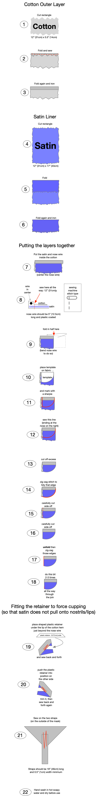

- Two straps only, which suits wearing of head-gear (but you need a decent nose)
- 400-thread cotton outer (utilitarian grey)
- Satin liner (1 - 6 layers depending on your COVID-19 paranoia and lung strength)
- plastic retainer sewn-in to push out liner to increase breathability.
- hand-washable: you should wash it nightly at least.
This is a modified Ragmask - original version here (v2.3). This one uses a different template and follows a slightly different construction guide:
